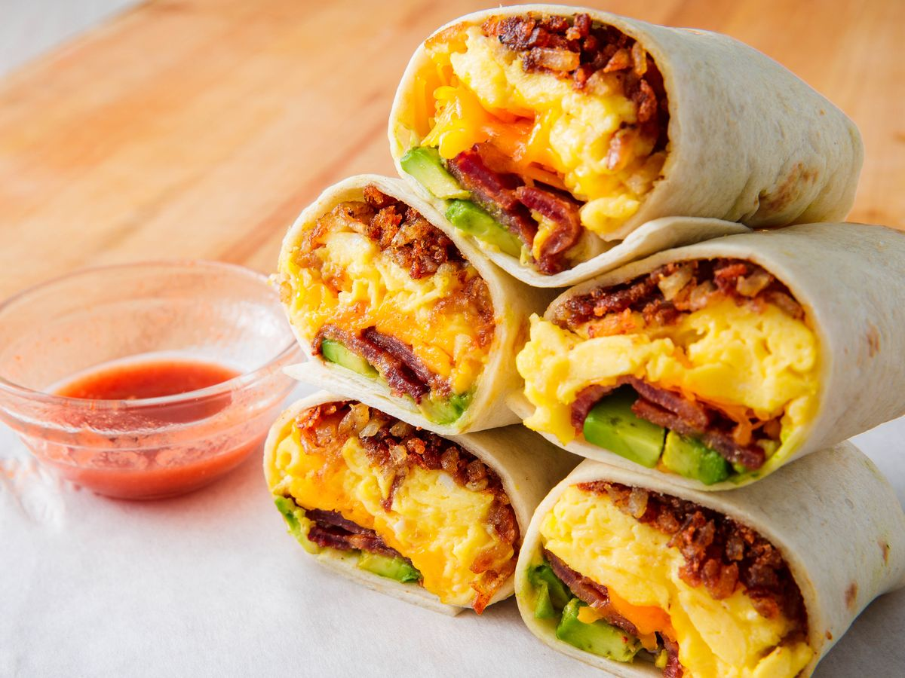

Shrimp Tacos

Description
This delicous breakfast burrito with eggs and bacon will have you craving these during dinner. The additonal rich flavors will have you loving these more than any other breakfast burrito you've ever had.
Ingredients
- 1 flour tortilla
- 3 eggs
- 2 slices of bacon
- 1/2 an avocado
- 1 potato
- 1/2 cup shredded chheddar cheese
- Salt and pepper
- Garlic and Onion powder
- Paprika
Steps
- Cube potato and season with salt,pepper, onion powder, garlic powder, and paprika all to taste.
- Grill the potato cubes in an oiled pan until golden
- On a separate pan cook the bacon strips till crispy
- Using the bacon grease, scramble the eggs and cook in the same pan containing the bacon grease.
- Chop the cooked bacon into fine pieces
- Slide the half of avocado into even strips
- Grill the flour tortilla on a large pan till warm
- On the warm tortilla, place the cooked eggs, then the avocado, potatoes, bacon and top with cheese
- Finally, roll the tortilla into a burrito and enjoy!